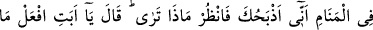
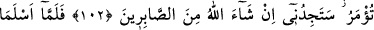

HAZRETİ İBRAHİM
VE İSMAİL’İN TESLİMİYETİ
83. Şüphesiz İbrahim de onun (Nuh’un) milletinden idi.
84. Çünkü Rabbine kalb-i selîm ile geldi.
85. Hani o, babasına ve kavmine: Siz kime kulluk ediyorsunuz? demişti.
86. «Allah’tan başka bir takım uydurma ilâhlar mı istiyorsunuz?»
87. «O halde âlemlerin Rabbi hakkındaki görüşünüz nedir?»